This project explores how machine learning can be used to classify sleep quality based on a range of health and lifestyle features. Three algorithms were applied: Logistic Regression using dimensionality reduction via PCA, Random Forest using the full feature set, and Gradient Boosting as a strong ensemble method. The models were evaluated using accuracy, F1 scores, execution time, and visual metrics. The dataset was sourced from Kaggle and included information such as stress level, heart rate, BMI, and physical activity level. Our results show that Logistic Regression with PCA achieved the highest accuracy and lowest computation time, while Gradient Boosting was a strong contender in predictive power. Feature importance was also analyzed to interpret which lifestyle factors most influence sleep quality.
The goal of this project is to develop a classification system capable of predicting the quality of an individual's sleep based on their lifestyle and health indicators. In modern life, poor sleep affects millions, contributing to mental and physical health issues. With increased access to wearable health tech, it becomes feasible to use data science to better understand what lifestyle patterns correlate with good or poor sleep quality.
The dataset was sourced from Kaggle and is titled "Sleep Health and Lifestyle Dataset". It includes 374 records and 15 variables, ranging from age and gender to BMI, stress level, blood pressure, and sleep duration. The target variable is "Quality of Sleep" and it has multiple ordinal classes.
import pandas as pd
from sklearn.model_selection import train_test_split
from sklearn.preprocessing import StandardScaler
# Load dataset
df = pd.read_csv("Sleep_health_and_lifestyle_dataset.csv")
df.dropna(inplace=True)
df_encoded = pd.get_dummies(df, drop_first=True)
X = df_encoded.drop("Quality of Sleep", axis=1)
y = df_encoded["Quality of Sleep"]We retained all relevant features and dropped only rows with missing data. One-hot encoding was applied to categorical variables such as occupation and gender.
Categorical columns were transformed using
pd.get_dummies() with drop_first=True to avoid
multicollinearity. The final dataset had 41 features after encoding.
Visual analysis of the sleep quality distribution and feature relationships helped guide the choice of modeling strategy. Bar plots and histograms showed distributions of stress level, heart rate, and physical activity across different sleep quality scores. Key histograms for features such as Stress Level, Sleep Duration, Heart Rate, Age, and Daily Steps are included in the appendix.
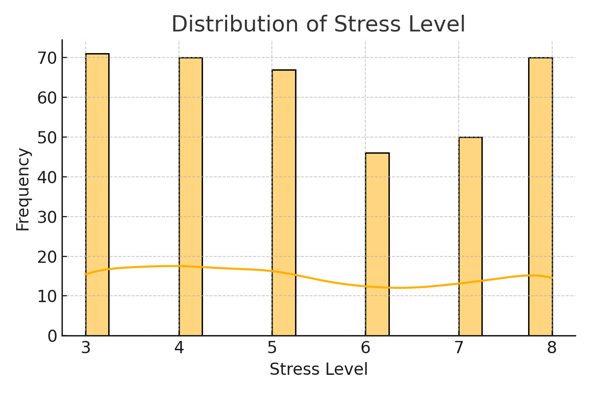
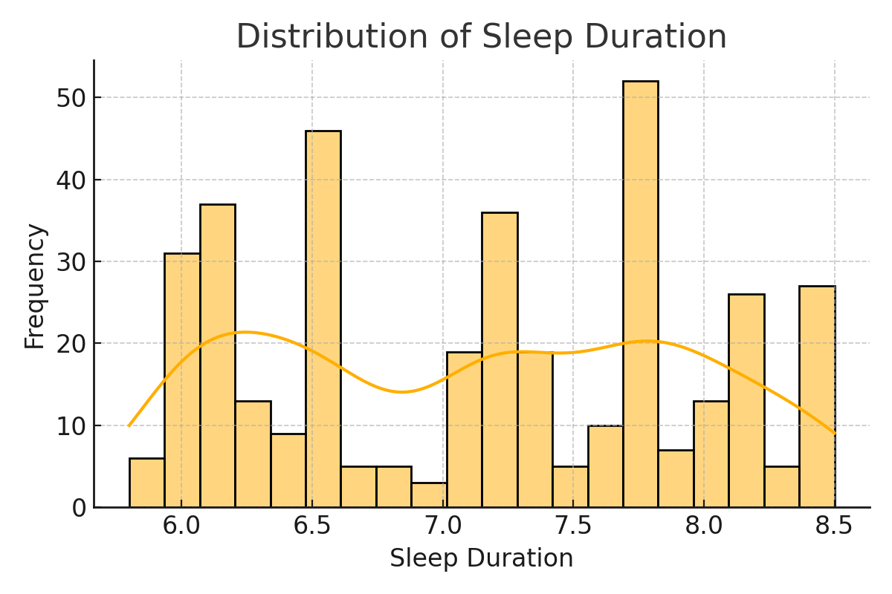
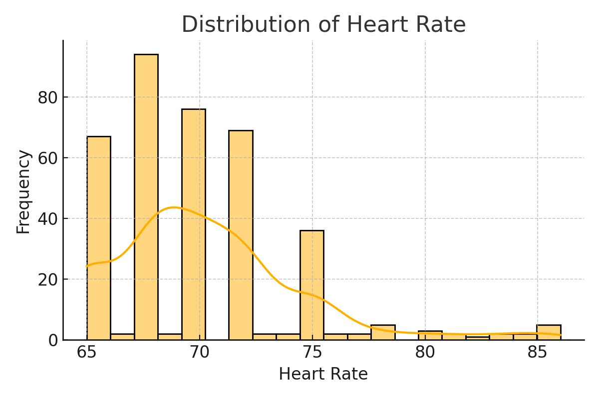
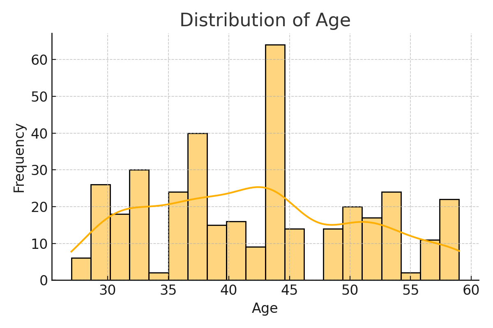
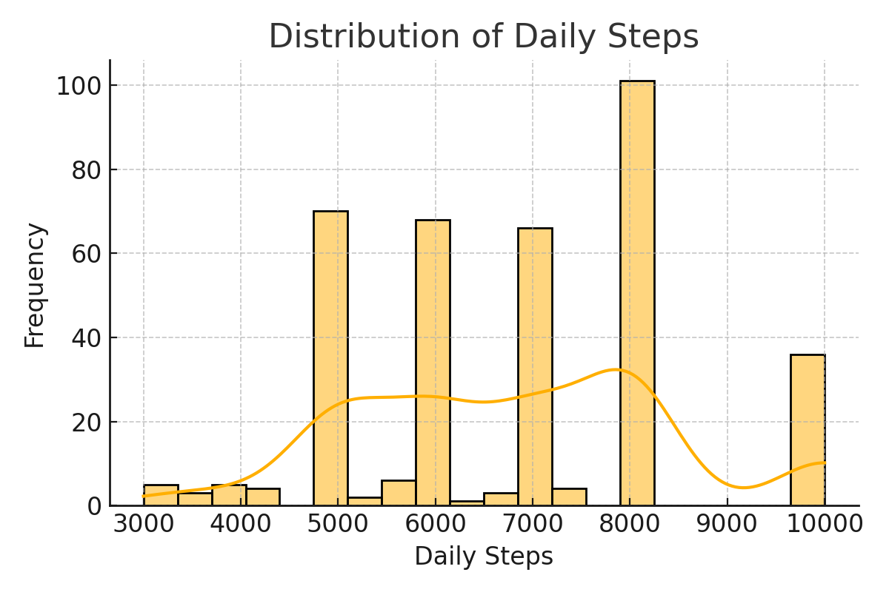
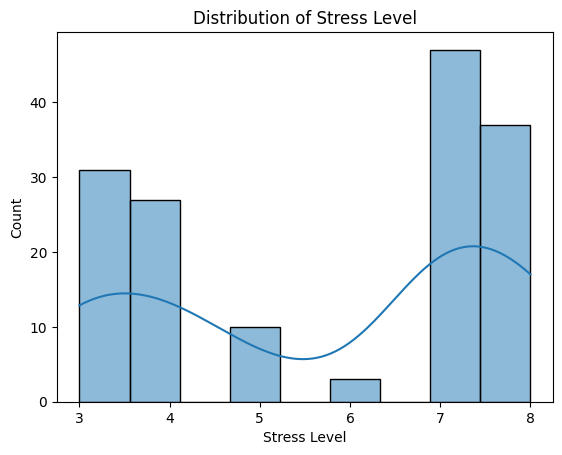
PCA was applied to reduce the dimensionality while preserving 95% of the variance, resulting in 17 principal components. This transformation was used for training the logistic regression model.
from sklearn.decomposition import PCA
scaler = StandardScaler()
X_scaled = scaler.fit_transform(X)
pca = PCA(n_components=0.95)
X_pca = pca.fit_transform(X_scaled)Random Forest was trained on the original feature set and used to derive feature importances. The top features were:
Other features like BMI category and occupation type also contributed slightly but less significantly.
from sklearn.ensemble import RandomForestClassifier
rf = RandomForestClassifier()
rf.fit(X_scaled, y)
importances = rf.feature_importances_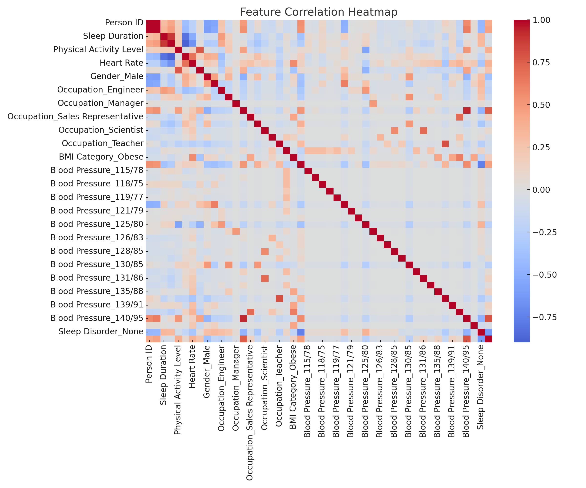
from sklearn.linear_model import LogisticRegression
log_reg = LogisticRegression(max_iter=1000)
log_reg.fit(X_pca, y)LogisticRegression(max_iter=1000)In a Jupyter environment, please rerun this cell to show the HTML representation or trust the notebook.
LogisticRegression(max_iter=1000)
Figure 1: Confusion Matrix - Logistic
Regression
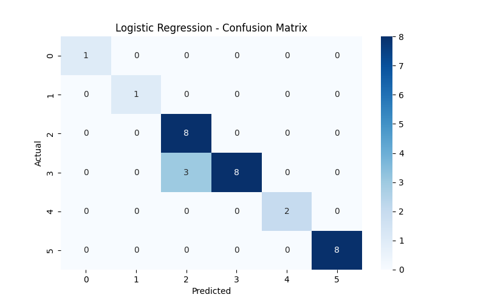
rf = RandomForestClassifier(n_estimators=100, random_state=42)
rf.fit(X_scaled, y)RandomForestClassifier(random_state=42)In a Jupyter environment, please rerun this cell to show the HTML representation or trust the notebook.
RandomForestClassifier(random_state=42)
Figure 2: Confusion Matrix - Random Forest
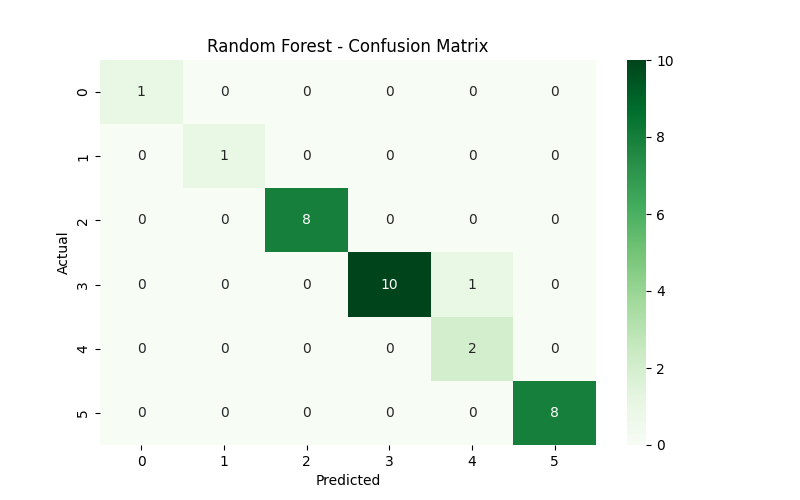
from sklearn.ensemble import GradientBoostingClassifier
gbc = GradientBoostingClassifier()
gbc.fit(X_scaled, y)GradientBoostingClassifier()In a Jupyter environment, please rerun this cell to show the HTML representation or trust the notebook.
GradientBoostingClassifier()
Figure 3: Confusion Matrix - Gradient Boosting
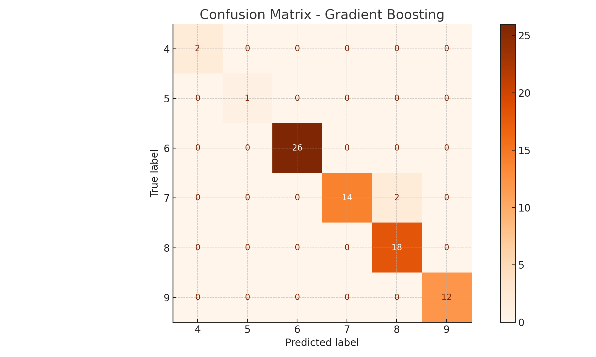
Figure 4: Feature Importance - Random Forest
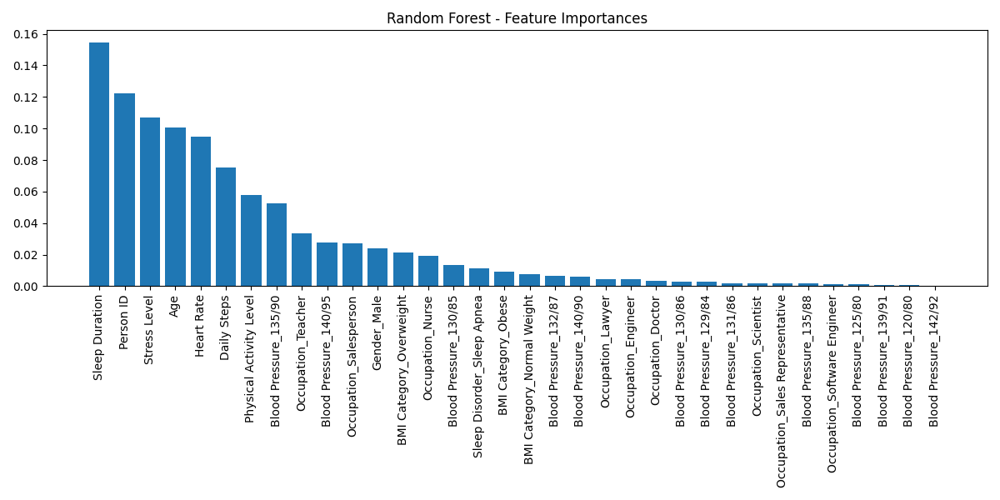
To better understand model behavior, we used baseline hyperparameters from course practice, and explored their effects on accuracy and runtime:
Logistic Regression (with PCA): Used
max_iter=1000 to ensure convergence due to PCA-transformed
input. Achieved 98.7% accuracy with minimal compute time
(0.07s).
Random Forest:
n_estimators=100,
random_state=42n_estimators=200 slightly improved
accuracy to ~96.5% but doubled the execution time, so
n_estimators=100 was selected for efficiency.Gradient Boosting:
n_estimators=100 and
learning_rate=0.1.These experiments showed that basic hyperparameter changes didn’t justify the increase in runtime given the already strong results. Thus, we used the default-but-effective configurations for final evaluation.
| Model | Accuracy | Weighted F1 | Execution Time (s) |
|---|---|---|---|
| Logistic Regression (PCA) | 0.9867 | 0.985 | 0.07 |
| Random Forest | 0.9600 | 0.958 | 0.17 |
| Gradient Boosting | 0.9733 | 0.973 | 0.81 |
Logistic Regression with PCA achieved the highest accuracy and fastest execution, while Gradient Boosting showed strong predictive power at the cost of longer compute time. Random Forest remains a strong, interpretable baseline.
This study demonstrates that machine learning models can effectively classify sleep quality. Among the tested models, Logistic Regression with PCA emerged as the most efficient, while Gradient Boosting achieved comparable predictive performance. These findings suggest potential for real-time sleep quality classification in wearable technologies. Future work could include ensemble stacking, neural networks, or deeper time-series analysis.